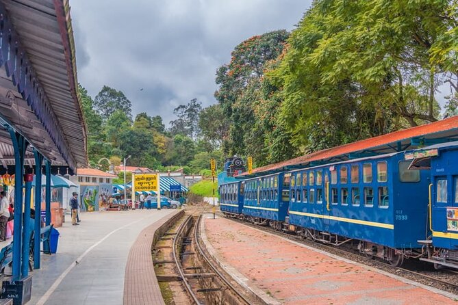
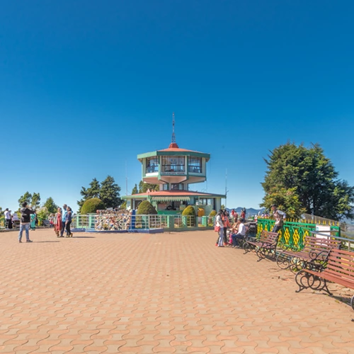
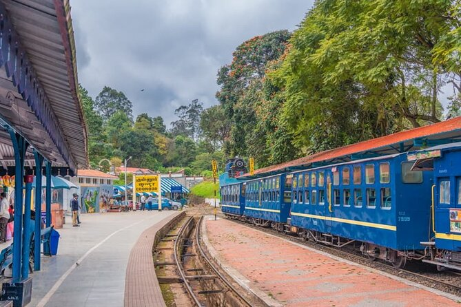
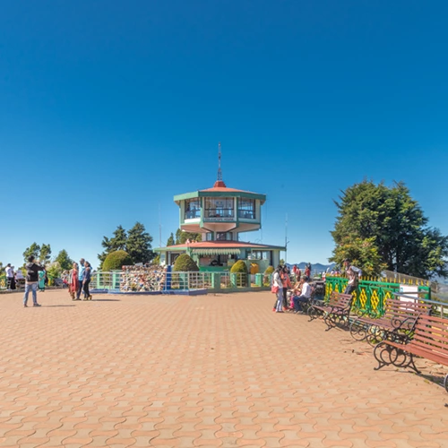

OOTY
Nestled in the Nilgiri Hills of Tamil Nadu, Ooty (Udhagamandalam) is a picturesque hill station known for its lush green landscapes, mist-covered mountains, and pleasant climate. A popular tourist destination, Ooty offers breathtaking views, sprawling tea plantations, and serene lakes. Visitors can enjoy a scenic ride on the Nilgiri Mountain Railway (Toy Train), explore the vibrant Botanical Gardens, or take in the beauty of Ooty Lake and Doddabetta Peak. Adventure lovers can indulge in trekking, boating, and horse riding, while food enthusiasts can savor homemade chocolates and fresh Nilgiri tea. Whether seeking relaxation or adventure, Ooty is a perfect retreat for nature lovers and travelers alike.Ooty was made a municipality in 1866, and civic improvements including roads, drainage, and water supply from the Marlimund and Tiger Hill reservoirs were added through Government loans.[16] In August 1868, the Nilgiris was separated from the Coimbatore district, and James Wilkinson Breeks was appointed its first commissioner.[9] On 1 February 1882, Nilgiris was made a district, and Richard Wellesley Barlow, the then commissioner, became its first collector.[8] By the early 20th century, Ooty was a well-developed hill station, with an artificial lake, various parks, religious structures, and sporting facilities for polo, golf, and cricket.[16] It served as the summer capital of the Madras Presidency and as a retreat for the British officials.

 


